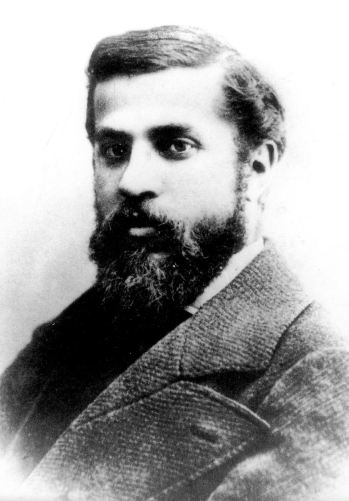

Casa Milà
Casa Milà, popularly known as La Pedrera or "The stone quarry", a reference to its unconventional rough-hewn appearance, is a modernist building in Barcelona, Catalonia, Spain. It was the last private residence designed by architect Antoni Gaudí and was built between 1906 and 1912.